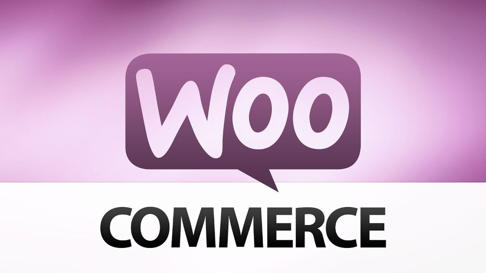
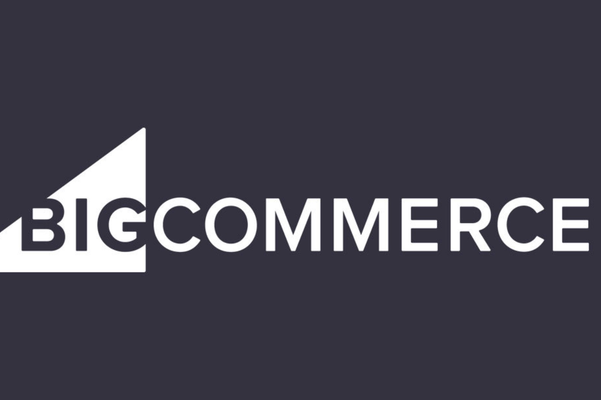
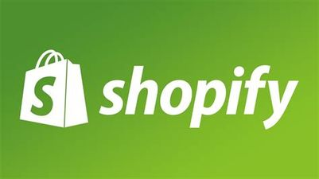
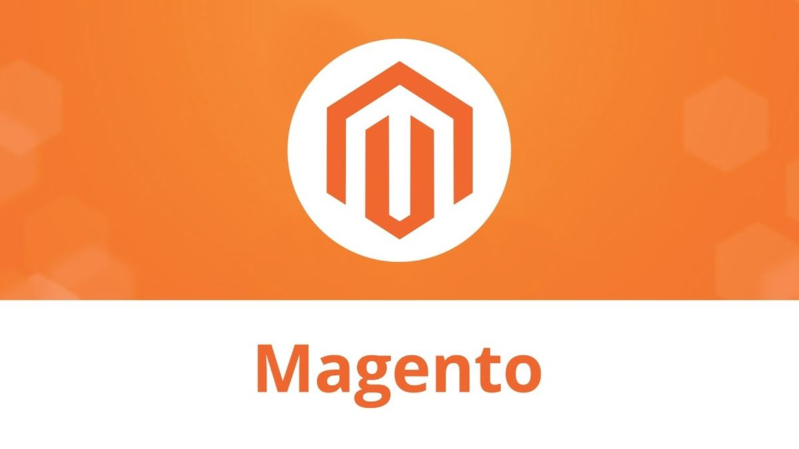
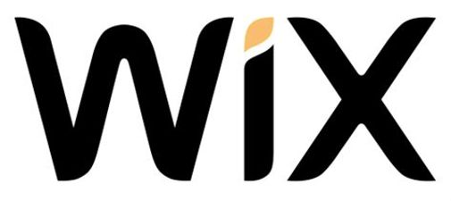
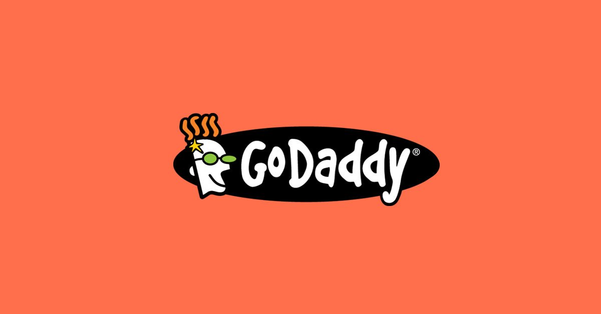

Types Of E-Commerce
There are several types of e-commerce models, based on market segmentation, that can be used to conducted business online.
- The 6 types of business models that can be used in e-commerce include:
- 1)Business-to-Consumer (B2C)
- 2)Consumer-to-Business (C2B)
- 3)Business-to-Business (B2B)
- 4)Consumer-to-Consumer (C2C)
- 5)Business-to-Administration (B2A)
- 6) Consumer-to-Administration (C2A)
- Each One of them will be explained bellow
-
01 B2C or direct-to-consumer
Business-to-consumer (B2C), or direct-to-consumer, is the most common e-commerce model. It deals in electronic business relationships between businesses—both producers and service providers—with end consumers. Many people like this method of e-commerce as it allows them to shop around for the best prices, read customer reviews, and often find different products that they would not otherwise be exposed to in the physical retail world. This e-commerce category also enables businesses to develop a more personalized relationship with their customers.
-
02 Advantage and Disadvantages
The advantages of B2C e-commerce include:
It includes highly reliable security systems, with step by step verification, account entry and admiration mode to look after business transactions. The third-party direct sales are backed up with familiar banking and accounting features that enable businesses to reach out to vendors and perform internal business transactions accordingly.
The disadvantages of B2C e-commerce include:
1)Infrastructure: Even though the internet enables reaching a huge, international pool of customers, many still do not have access to the internet;
2)Competition: Competition is severe. There are certain companies that have managed to maintain sizeable market shares giving them a chance to survive in the long run. New and improved products must be rolled out consistently to secure customers;
3) Limited product exposure: Despite rewarding the customers with ease-of-access and a unique level of flexibility for choosing products, e-commerce has restricted product exposure for buyers over the internet. Most websites would not allow customers to go beyond the glamorous product images and their descriptions at the time of purchasing the product. It gives consumers the idea that e-commerce supports ‘limited product exposure', which is why some products disappoint customers at the time of shipment and are sent back to companies immediately. -
03 B2C transaction
Anything one buys online as a consumer is done as part of a B2C transaction. The decision-making process for a B2C purchase is much shorter than a business-to-business (B2B) purchase, especially for items that have a lower value, thus having a shorter sales cycle. B2C businesses therefore typically spend less marketing dollars to make a sale but also have a lower average order value and less recurring orders than their B2B counterparts. B2C innovators have leveraged technology like mobile apps, native advertising and re-marketing to market directly to their customers and make their lives easier in the process. Examples of B2C businesses are everywhere: exclusively-online retailers include Newegg, Overstock.com, Wish, and ModCloth.
Major B2C-model brick-and-mortar businesses include Staples, WalMart, Target, REI, and Gap. The advantages of B2C e-commerce include: Unlimited marketplace: The marketplace is unlimited, enabling the customers to explore and shop at their convenience. We can check on the desired product from home, offices and anywhere else without any time restrictions. Products can be purchased from around the world. It represents the breaking of international barriers, giving people the opportunity to purchase products virtually; Lower costs of doing business: B2C has reduced several business components including employees, purchasing cost, mailing confirmations, phone calls, data entry and the requirement for opening stores with physical existence.
This has reduced transaction costs for customers; Business administration made easier: It has made it easier to record store inventory, shipment, logs and overall business transactions compared with traditional methods of business administration. These calculations are now occurring automatically. Moreover, real-time updates can be provided, through which any issues can be flagged; More efficient business relationships: Building new and improved associations with the dealers and suppliers; Workflow automation: This process enables the shipping of products in a timely manner. Furthermore, it automatically adjusts stock levels and figures out location availability.
Consumer-to-Business (C2B)
-
01Consumer-to-business (C2B)
Consumer-to-business (C2B) e-commerce is when a consumer makes their services or products available for companies to purchase. The competitive edge of the C2B e-commerce model is in its pricing for goods and services. This approach includes reverse auctions, in which customers name the price for a product or service they wish to buy. Another form of C2B occurs when a consumer provides a business with a fee-based opportunity to market the business's products on the consumer's blog.
For instance, food companies may ask food bloggers to include a new product in a recipe and review it for readers of their blogs. YouTube reviews may be incentivized by free products or direct payment. This could also include paid advertisement space on the consumer website. Google Adwords/Adsense has enabled this kind of relationship by simplifying the process in which bloggers can be paid for ads. Services such as Amazon Affiliates allow website owners to earn money by linking to a product for sale on Amazon.
Examples of C2B include: a graphic designer customizing a company logo, or a photographer taking photos for an e-commerce website. -
02 Advantage and Disadvantages
The advantages of C2B can be expressed through an example:
The C2B website thefreemortgagecalculator.com offers a LendingTree advertisement at the top of the page. The advantage of this website is that the owner does not have to sell mortgages, meet with customers, or pay for everyday business operation expenses in order to make money. If the LendingTree advertisement is used by a visitor, the website owner gets paid a commission from LendingTree for the lead.
The disadvantages of C2B transactions are that one must be well-versed in web design to create such a website and the amount of money earned is far less than what could be earned by selling the mortgage directly to the consumer instead -
03About the C2b model
The C2B model has flourished in the internet age because of ready access to consumers who are "plugged in" to brands. Where the business relationship was once strictly one-directional, with companies pushing services and goods to consumers, the new bi-directional network has allowed consumers to become their own businesses. Reductions in the cost of technologies such as video cameras, high-quality printers, and Web development services give consumers access to tools for promotion and communication that were once limited to large companies. As a result, both consumers and businesses can benefit from the C2B model.
Business-to-Business (B2B)
-
01Business2Business
Business-to-Business (B2B) e-commerce refers to the sale of goods or services between businesses via an online sales portal. While sometimes the buyer is the end user, often the buyer resells to the consumer. This type of e-commerce typically applies to the relationship between producers and wholesalers; it may additionally remain applied to the relationship between the producers or the wholesalers and the retailers themselves. However, the same relationship can also occur between service providers and business organizations. B2B typically requires more venture capital and a longer sales cycle, but results in higher order value and more recurring purchases.
As newer generations become decision makers in business, B2B ecommerce will become more important. In 2015, Google found that close to half of B2B buyers were millennials—nearly double the amount reported in 2012. Examples of this model are ExxonMobil Corporation, the Chevron Corporation, Boeing, and Archer-Daniels-Midland. These businesses have custom, enterprise ecommerce platforms that work directly with other businesses in a closed environment. -
02 Advantage and Disadvantages
The advantages of B2B e-commerce include:
1)Convenience: While companies can sell through physical storefronts or take transactions by phone, B2B commerce often takes place online, where companies advertise their products and services, allow for demonstrations and make it easy to place bulk orders. Sellers also benefit from efficient order processing thanks to this digital transaction model.
2)Higher profits: B2B companies often sell their items in wholesale quantities, allowing buyers to receive a good deal and restock less often. Larger order numbers lead to higher potential sales and additional profits for B2B sellers. At the same time, the ease of advertising to other businesses through B2B websites can help cut marketing costs and boost conversion rates.
3)Huge market potential: From business software and consulting services to bulk materials and specialized machinery, B2B sellers can target a large market of companies across industries. At the same time, they have the flexibility of specializing in an area like technology to become a leader in the field.
4)Improved security: Since contracts are a common part of B2B commerce, there's some security for both buyers and sellers in that there's less concern that one will pay and the other will deliver goods as promised. Since sales usually get tracked digitally, it's also more secure in that B2B sellers can track and monitor their financial results.
The disadvantages of B2B e-commerce include:
1)More complex setup process: Getting started as a B2B retailer takes work to figure out how to get customers who stay dedicated and make large-enough orders. This often requires thorough research to advertise to potential businesses, set up a custom ordering system and adapt quickly when sales are underwhelming;
2)Limits to sales: While B2B companies can sell a lot, they do miss out on potential sales to individual customers. The smaller pool of business buyers and the need to negotiate contracts can put some limits on profits, especially when the company loses key buyers to other competitors;
3) Need for B2B sellers to stand out: At the same time, the B2B market has many companies competing and selling similar products and services. Sellers often need to cut prices and find special ways to grab companies' attention to succeed in the market;
4)Special ordering experience needed: B2B companies selling online need to put much effort into designing a website and ordering system that buyers find easy to use. This means presenting product and service information clearly, offering online demos or consultations and using order forms with appropriate options for quantities and any special customization needed.
Consumer-to-Consumer (C2C)
-
01 Consumer-to-Consumer (C2C)
Consumer-to-consumer (C2C), or customer-to-customer, represents a market environment where one customer purchases goods from another customer using a third-party business or platform to facilitate the transaction. In this case, the third-party platform typically earns their money by charging transaction or listing fees. These businesses benefit from self-propelled growth by motivated buyers and sellers, but face a key challenge in quality control and technology maintenance. Another customers’ benefit is the competition for products. Customers may often find items that are difficult to locate elsewhere. Also, margins can be higher than traditional pricing methods for sellers as there are minimal costs due to the absence of retailers or wholesalers. Opening a C2C site takes careful planning.
Examples of C2C include Craigslist and eBay, who pioneered this model in the early days of the internet. Generally, transactions in this model occur via online platforms (such as PayPal), but often are conducted using social-media networks (e.g., Facebook marketplace) and websites (Craigslist). -
02 Advantage and Disadvantages
The advantages of C2C include:
Availability: It is always available so consumers can shop on demand; Websites are updated regularly;
1)Higher profitability: Consumers selling products directly to other consumers can achieve higher profits;
2)Low transaction cost: Selling via online platforms is much cheaper than the costs incurred on having physical store space;
3)Direct relationship: Customers can directly contact sellers without having to go through an intermediary.
The disadvantages of C2C include:
1)Payment may be less secure;
2)Security issues: There could be theft due to scammers falsely impersonating well known C2C sites;
3)Lack of quality control of products.
Business-to-Administration (B2A)
-
01 Business-to-Administration (B2A)
Business-to-administration (B2A), also known as business-to-government (B2G), refers to all transactions between companies and public administrations or government agencies. Government agencies use central websites to trade and exchange information with various business organizations.
This is an area that involves many services, particularly in areas such as social security, employment, and legal documents. Businesses that are accustomed to interacting with other businesses or directly with consumers often encounter unexpected hurdles when working with government agencies.
Layers of regulation can harm the overall efficiency of the contracting process, and thus, governments tend to take more time than private companies to approve and begin work on a given project. While businesses may find that government contracts involve additional paperwork, time, and vetting, there are advantages to providing goods and services to the public sector. Government contracts are often large and more stable than analogous private-sector work. A company with a history of successful government contracting usually finds it easier to get the next contract.
One example of a B2A model is Accela, a software company that provides government software solutions and public access to government services for permitting, planning, licensing, public health, and so on.
Consumer-to-Administration (C2A)
-
01 Consumer-to-Administration (C2A)
BConsumer-to-administration (C2A) e-commerce encompasses all electronic transactions between individuals and public administration. The C2A e-commerce model helps the consumer post their queries and request information regarding the public sector directly from their local governments/authorities. It provides an easy way to establish communication between the consumers and the government. Examples of C2A include taxes (filing tax returns), health (scheduling an appointment using an online service), and paying tuition for higher education.
Facts About E-Commerce
There are many facts about e-commerce; Some are listed bellow
Eighty-one percent of shoppers research their product online before purchasing.
In 2013 57% of Irish Internet users shopped online. This figure has increased steadily since then.
Shoppers aged 18 to 34, spend more money online than other age groups.
Irish People spend €8.5 million a day online on websites in other countries
E-Commerce Website Builders
E-Commerce websites are online portals that facilitate online transactions of goods and services through means of the transfer of information and funds over the Internet.
In the early days, e-commerce was done partially through emails and phone calls.
Now, with a single website, anything and everything that a transaction needs, can be executed online.

Woo Commerce
WooCommerce is an open-source e-commerce plugin for WordPress. It is designed for small to large-sized online merchants using WordPress.

Big Commerce
BigCommerce is a NASDAQ-listed ecommerce platform that provides software as a service services to retailers. The company’s platform includes online store creation, search engine optimization, hosting, and marketing and security for small and medium-sized businesses.

Shopify
Shopify Inc. is a Canadian multinational e-commerce company headquartered in Ottawa, Ontario. It is also the name of its proprietary e-commerce platform for online stores and retail point-of-sale systems.

Magento
Magento is an open-source e-commerce platform written in PHP. It uses multiple other PHP frameworks such as Laminas and Symfony. Magento source code is distributed under Open Software License (OSL) v3.0. Magento was acquired by Adobe Inc in May 2018 for $1.68 billion.

Wix
Wix.com Ltd. is an Israeli software company, providing cloud-based web development services. It allows users to create HTML5 websites and mobile sites through the use of online drag and drop tools.

GoDaddy
GoDaddy Inc. is an American publicly traded Internet domain registrar and web hosting company headquartered in Tempe, Arizona and incorporated in Delaware. As of June 2020[update], GoDaddy has more than 20 million customers and over 7,000 employees worldwid
Team
Mrigasya Biswas
Website CreatorRoll number : 31
Section:D
Hemal Reddy
PartnerRoll number : 35
Section: D

Vismay
PartnerRoll number : 40
Section:D
Venika
PartnerRoll number : 22
Section:D
Vaishnavi
PartnerRoll number : 21
Section:D
Contact
Contact us....
Location:
New Horizon Gurukul, Doddakannelli - Kaadubeesanahalli Road, Kaverappa Layout, Kadubeesanahalli, Bengaluru, Karnataka
Email:
info@example.com
Call:
+1 5589 55488 55s